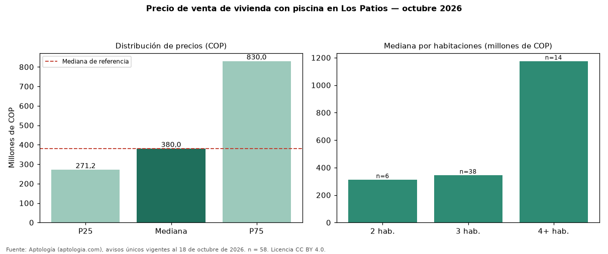

Precio de venta de vivienda con piscina en Los Patios — octubre 2026
COP 380 millones es la mediana de venta de vivienda con piscina en Los Patios, según 58 avisos únicos. Es prácticamente la misma mediana de toda la oferta de venta en Los Patios (COP 380 millones). Frente a los avisos sin piscina del mismo grupo (COP 390 millones, n = 74), la diferencia es de −3 %; por metro cuadrado, +49 %. El rango intercuartílico va de COP 271 millones a COP 830 millones (razón 3,1). Por metro cuadrado, la mediana es COP 4.141.934/m² (+24 % frente a COP 3.333.333/m²), puesto 4 de 7 ciudades comparables. Por habitaciones: 2 habitaciones, COP 312 millones (n = 6); 3 habitaciones, COP 345 millones (n = 38); 4 o más habitaciones, COP 1,18 mil millones (n = 14). El área mediana es 84 m² (referencia: 119 m²). Datos abiertos CC BY 4.0 de Aptología; fuente y búsqueda de inmuebles: https://www.aptologia.com/venta/los-patios. Archivos: PDF de 2 páginas, CSV con las cifras y gráfica PNG.

| Avisos únicos | 58 |
|---|---|
| Percentil 25 | COP 271.250.000 |
| Mediana | COP 380.000.000 |
| Percentil 75 | COP 830.000.000 |
| Mediana por m² | COP 4.141.934 |
Fuente: avisos vigentes de portales inmobiliarios recopilados por Aptología, deduplicados (mínimo 30 avisos únicos por celda). Precios pedidos, no cerrados. Fecha: 2026-10-18.